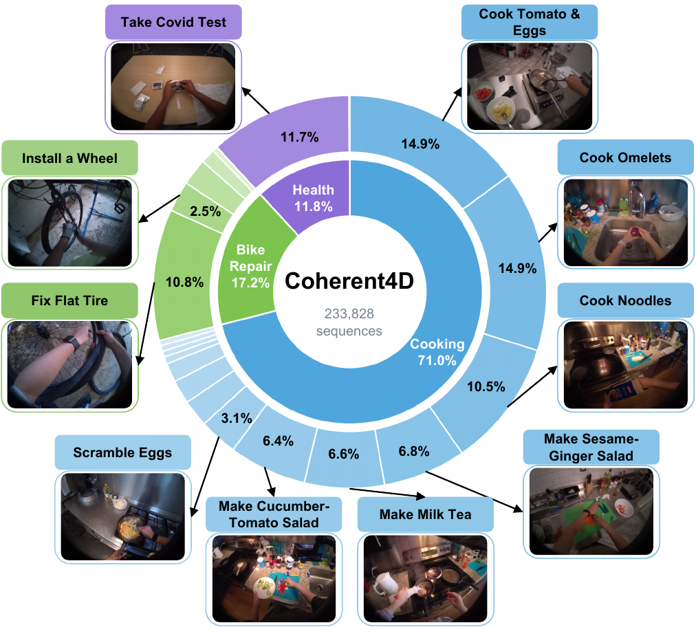
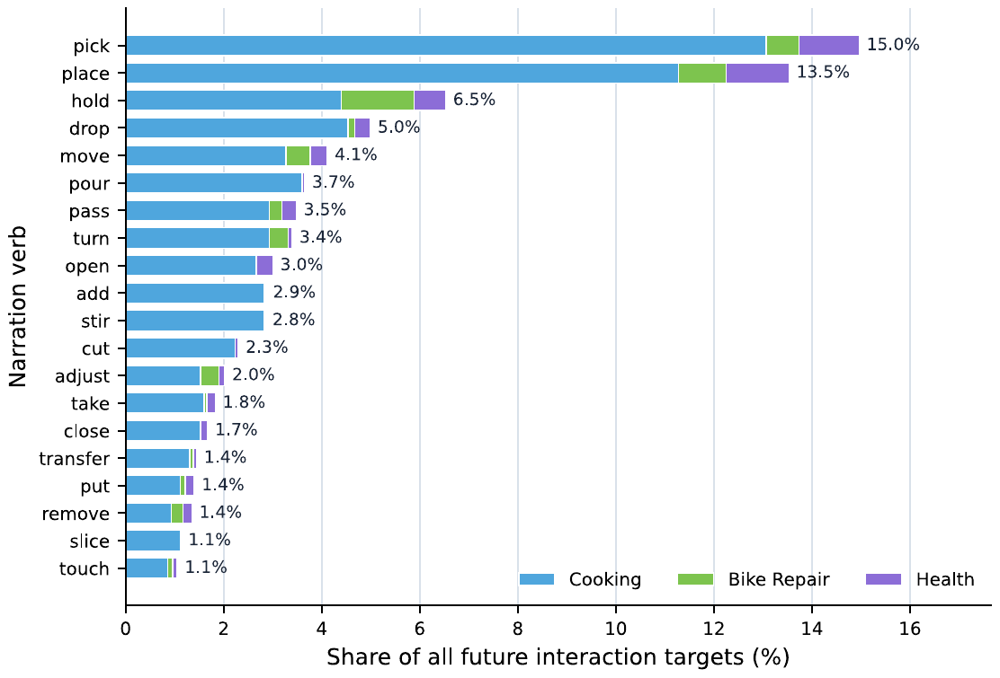
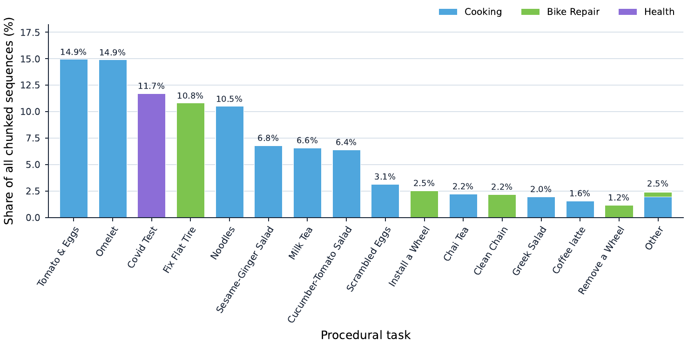
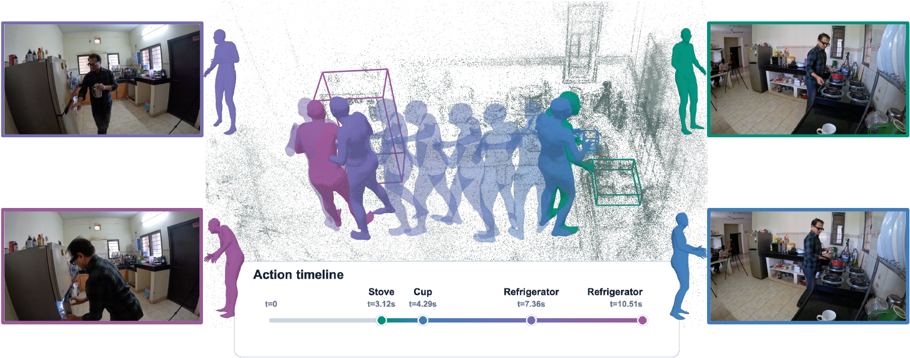
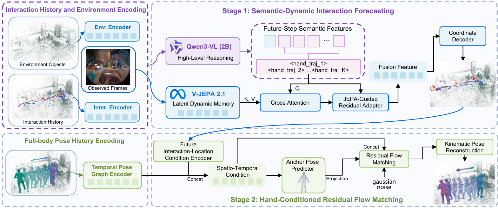
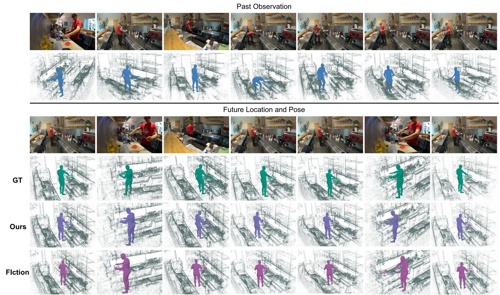
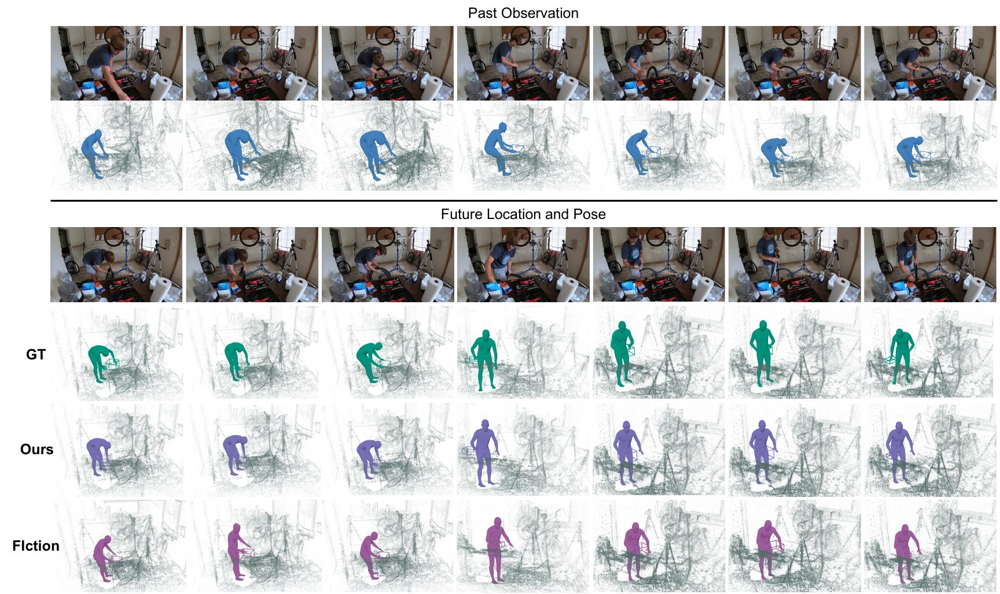

233,828forecasting samples
Abstract
Egocentric 4D interaction forecasting aims to anticipate both where future interactions will occur in 3D and how the human body will move to realize them, providing an important capability for assistive robotics and human–computer interaction. Existing methods typically model interaction localization and full-body motion separately, or represent interaction locations using discrete spatial grids, leaving their continuous temporal and geometric correspondence insufficiently modeled. In addition, accurate interaction forecasting requires jointly capturing task semantics, metric localization, and short-horizon visual dynamics, while stochastic pose forecasting must balance motion diversity with structural consistency. To address these challenges, we introduce Coherent4D, a large-scale egocentric dataset for continuous 4D interaction forecasting, comprising approximately 233K samples across Cooking, Health, and Bike Repair. Each sample pairs an ordered sequence of future 3D interaction locations with temporally aligned full-body poses in a shared coordinate system, together with continuous-space evaluation metrics. Building on this formulation, we propose HIGFlow, a Hand-Interaction-Guided Residual Flow framework that models forecasting as a cascaded where-to-how process. HIGFlow first predicts continuous future interaction locations by combining semantic grounding with short-horizon visual dynamics, and then uses the predicted location sequence to condition a deterministic motion anchor and residual Flow Matching for diverse yet structurally consistent full-body motion forecasting. Extensive experiments across all three domains demonstrate consistent improvements over representative baselines on both interaction-location and pose forecasting, while ablations validate the contributions of the proposed components.
Dataset
Coherent4D organizes future hand locations and SMPL states as timestamp-aligned sequences in a shared coordinate system.
21procedural tasks
787unique takes
535object categories

Domain and Task Coverage
Coherent4D spans Cooking, Bike Repair, and Health, combining frequent manipulation routines with domain-specific long-horizon activities.
Cooking71.0%
Bike Repair17.2%
Health11.8%
Training and evaluation splits
| Domain | Horizon | Takes | Train | Val | Test | Total | Targets | Obj. |
|---|---|---|---|---|---|---|---|---|
| Cooking | 10 | 331 | 136,079 | 15,435 | 14,527 | 166,041 | 1,337,589 | 428 |
| Health | 5 | 205 | 21,532 | 1,899 | 4,167 | 27,598 | 114,964 | 170 |
| Bike Repair | 4 | 251 | 35,987 | 3,150 | 1,052 | 40,189 | 141,633 | 197 |
| Total | — | 787 | 193,598 | 20,484 | 19,746 | 233,828 | 1,594,186 | 535 |
Verb diversity

Task distribution

A sample of Coherent4D

Original video
Visualization
Method
HIGFlow couples continuous interaction localization with temporally aligned full-body motion forecasting in a two-stage pipeline.

Experiments
HIGFlow improves continuous interaction localization and global pose forecasting across all three Coherent4D domains.
Interaction location forecasting
| Model | Health | Bike Repair | Cooking | ||||||
|---|---|---|---|---|---|---|---|---|---|
| ADE | ADE90 | FDE | ADE | ADE90 | FDE | ADE | ADE90 | FDE | |
| FIction | 40.30 | 62.62 | 40.58 | 88.55 | 143.21 | 98.61 | 100.61 | 184.63 | 107.11 |
| Qwen3-VL | 57.53 | 89.54 | 82.04 | 90.71 | 156.55 | 103.81 | 103.95 | 199.20 | 112.22 |
| V-JEPA | 45.18 | 69.49 | 46.26 | 86.50 | 142.43 | 96.33 | 102.33 | 194.80 | 107.35 |
| Diff-IP3D | 292.84 | 433.26 | 294.25 | 525.63 | 842.93 | 561.19 | 647.23 | 1268.28 | 662.71 |
| MMTwin | 290.45 | 437.88 | 285.21 | 429.71 | 690.80 | 480.29 | 513.75 | 957.17 | 556.40 |
| HIGFlow | 40.21 | 59.52 | 41.44 | 80.91 | 131.87 | 93.78 | 93.46 | 178.20 | 104.26 |
Interaction location errors on Coherent4D are reported in millimeters. Lower is better. Bold and underline denote the best and second-best results.
Full-body pose forecasting
| Model | MPJPE | PA-MPJPE | Root Trans. | Body Geo. | ||||
|---|---|---|---|---|---|---|---|---|
| Single | Best-5 | Single | Best-5 | Single | Best-5 | Single | Best-5 | |
| Health | ||||||||
| FIction | 117.17 | 115.91 | 42.12 | 42.01 | 104.09 | 102.91 | 9.03 | 9.02 |
| SkeletonDiffusion | 166.32 | 137.39 | 53.18 | 52.19 | 158.85 | 138.47 | 10.55 | 10.45 |
| SLD-HMP | 2070.93 | 92.47 | 86.06 | 32.91 | 2053.66 | 79.23 | 24.11 | 5.67 |
| HIGFlow | 95.25 | 93.45 | 43.79 | 43.66 | 80.93 | 79.06 | 8.80 | 8.79 |
| Bike Repair | ||||||||
| FIction | 295.34 | 284.52 | 78.95 | 78.24 | 292.07 | 279.21 | 13.60 | 13.50 |
| SkeletonDiffusion | 453.52 | 370.26 | 113.22 | 109.63 | 405.49 | 331.24 | 17.69 | 17.44 |
| SLD-HMP | 314.15 | 280.81 | 80.41 | 74.47 | 289.53 | 247.85 | 12.45 | 11.49 |
| HIGFlow | 213.65 | 210.09 | 70.07 | 70.03 | 224.19 | 220.18 | 15.05 | 15.05 |
| Cooking | ||||||||
| FIction | 237.86 | 226.62 | 43.81 | 43.76 | 227.23 | 214.75 | 8.34 | 8.34 |
| SkeletonDiffusion | 310.39 | 260.00 | 51.43 | 51.25 | 278.05 | 229.97 | 11.42 | 11.41 |
| SLD-HMP | 396.31 | 298.33 | 48.95 | 42.72 | 362.71 | 270.81 | 8.82 | 7.48 |
| HIGFlow | 143.98 | 143.41 | 39.45 | 39.42 | 139.26 | 138.73 | 7.53 | 7.53 |
MPJPE, PA-MPJPE, and Root Trans. are reported in millimeters, while Body Geo. is reported in degrees. Best-5 reports all metrics for the candidate selected by sample-level MPJPE. Lower values are better. Bold and underline denote the best and second-best results, respectively.
Qualitative Results
Compare predicted hand locations and full-body trajectories against ground truth and FIction in challenging procedural scenes.
01
Cooking
Long-horizon object manipulation in a reconstructed kitchen.

02
Bike Repair
Large body displacement and tool-centered manipulation.

Conclusion
We introduced the Coherent4D dataset, which provides temporally aligned interaction location and full-body pose sequences in a shared coordinate system for continuous supervision and evaluation. Building on this formulation, we proposed the HIGFlow framework, a cascaded where-to-how model that couples future interaction-location and full-body pose forecasting by using future interaction locations as geometric conditions for pose prediction. Within HIGFlow, Semantic-Dynamic Interaction Forecasting improves continuous interaction localization, while Hand-Conditioned Residual Flow Matching produces diverse yet structurally consistent poses. Experiments validate HIGFlow on both forecasting tasks, while ablations confirm the contributions of its key components. Future work will explore human-intent modeling and contact-aware conditioning for longer-horizon and more physically consistent forecasts.